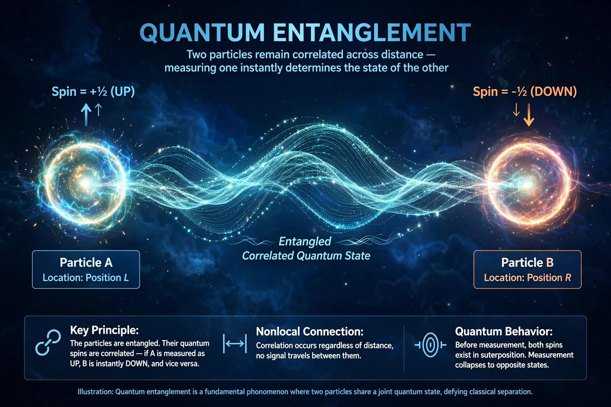

Quantum entanglement
| First discussed | 1935, EPR paradox paper |
|---|---|
| Key figures | Albert Einstein, Erwin Schrödinger, John Stewart Bell |
| Related | Bell's theorem, Quantum teleportation |

[Image: Illustration of two entangled particles connected across a distance]Quantum entanglement is the phenomenon that occurs when a group of particles is generated, interacts, or shares spatial proximity in a manner such that the quantum state of each particle cannot be described independently of the state of the others, even when the particles are separated by a large distance.
The topic of quantum entanglement is at the heart of the disparity between classical and quantum physics. Albert Einstein famously dismissed the correlations as 'spooky action at a distance'. The 1935 Einstein–Podolsky–Rosen paper argued that quantum mechanics must be incomplete; John Stewart Bell proved in 1964 (Bell's theorem) that no local hidden-variable theory can reproduce all quantum predictions, and experiments culminating in loophole-free tests in 2015 have confirmed that entanglement is real. Alain Aspect, John Clauser and Anton Zeilinger received the 2022 Nobel Prize in Physics for experiments with entangled photons.
Entanglement is a primary feature of quantum mechanics not present in classical mechanics, and is now a resource exploited by quantum computing, quantum cryptography and Quantum teleportation.
History
Einstein, Podolsky and Rosen introduced the EPR thought experiment in 1935 to argue that quantum mechanics, which allows instantaneous correlations between distant particles, could not be a complete description of reality. Erwin Schrödinger, responding the same year, coined the term 'entanglement' (Verschränkung) and devised his cat paradox. For three decades the matter was treated as philosophy; Bell's theorem (1964) made it testable, and the experiments of Freedman and Clauser (1972), Aspect (1981–82), and the loophole-free tests of 2015 progressively closed every escape route for local realism.
Meaning and paradoxes
For a pair of particles in a singlet state, measuring one particle's spin along any axis lets one predict with certainty the result of the same measurement on the other — yet neither particle has a definite spin beforehand in the quantum description. The correlations exceed any achievable by shared classical information (quantified by Bell and CHSH inequalities), but they cannot transmit information faster than light (the no-cloning/no-signalling theorems), so entanglement does not conflict with special relativity in operational terms, even though its reconciliation with relativistic locality remains debated.
Applications
Entanglement underlies quantum teleportation (transferring a state using entanglement plus classical communication), superdense coding, entanglement-based quantum key distribution, and the operation of quantum computers, where multi-qubit entangled states are the substrate of computation. Satellite experiments (notably China's Micius, 2016) have distributed entanglement over more than 1,000 km.